GPS dependence:
If you are depending on the GPS to get you back to the car, to camp, or to safety, dont keep it turned on all the time. Depleting the batteries will ruin your day if you havent taken the time to learn ground reference navigation with a compass and map. Let the magic instrument give you a magnetic compass heading to your destination, then give the batteries a break. Turn it off and put it away. Use the compass to shoot an azimuth on a distant landmark in the approximate direction you are going, and put that away, too. Pay attention to the country around you and not to the ground immediately in front of your feet, the compass rose or the whispers and complaints from the display on the GPS.
Know how to translate the coordinates displayed on the GPS to a position on the map. The numbers displayed on the GPS screen represent one of two types of coordinates: These are Long/Lat, and UTM (Universal Transverse Mercator).
The UTM coordinates are easiest to use. If you prefer one coordinate system over the other, you can go into the setup menu on the GPS, under
COORDINATE SYSTEM, and instruct it to give you coordinates of that type.
When you find yourself in trouble take a fix of where you are. Write down the coordinates. If your vehicle is stranded it might save you a lot of trouble and money relocating it. Keep a mental record of what direction you are moving away from your vehicle and try to form a rough idea of how far youve gone. If you eventually get cell phone contact and you can give them your coordinates the rest will flow smoothly.
Detailed maps for remote areas usually carry both sets of coordinates in the margins to allow you determine your position or destination on the map in terms of those coordinates, and then feed the coordinates to the GPS. Thats useful information. You can double-check where you think you are against the exact position determined by the GPS. You can also feed in the coordinates for your destination to allow the GPS to tell you how far you have to travel. And when you leave your vehicle on a nondescript mountain road you can rob yourself a lot of healthy walking by taking a fix with the GPS and saving it under the heading,
TRUCK.
However, carry a set of spare batteries and rotate them frequently.
The first symptoms of trouble
When you get into trouble in any remote area but maybe arent lost yet, the first inclination is to go into a fit of cursing or remorse. The rock that has your differential high-centered, the rubber pom-pom that used to be a fan belt, steam escaping from a radiator hose and the pool of oil accumulating under the bash plate are all Fates way of telling you to slow down. The pressures of modern life have conditioned us to see such blessings in a negative context. After the cursing or self-pity, a lot of people move on to frantic, counter-productive activity.
When one of these events happens in a remote desert area quiet reflection, moderation, and a carefully considered plan of action stands the best chance of making your day go better. Anger might be okay when theres a margin for error.
During those first moments after you discover you are stranded or lost you dont know yet whether you have the luxury for anger. Respect the potentials.
Stop and think. Breathe slowly and reflect on your situation. Think smart. Dont move before you pause, consider everything and have a plan of action.
This might involve taking a long look at the maps you wisely carried along with you. Try to establish your exact geographic location. Inventory the water and equipment available to you. Consider how you will protect yourself from the sun, and cold. Look at all the possibilities.
Do your inventory with imagination and look for anything you might find useful.
That plastic grocery bag was trash a little while ago. Now it might be treasure.
The mirror on the back side of your windshield visor might belong in your pocket.
If you are going to have to walk, consider your clothing, your shoes, how much water to carry, and where, exactly, you think you are headed.
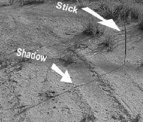
LOST?
When you begin to wonder if you might be lost, you are. Thats the rule of thumb. Believe in it from the first nagging wiggle at the corner of your mind.
Eyes and brain:
If you get into trouble in the desert, notice game trails, cow trails, and fresh droppings. Water might be somewhere at one end or the other of every trail.
Theres a 50% chance your guess will be right. Where the game trails converge and increase in number, the chances for water increase.
It might sound strange, but even contrails can help. Notice over several hours or days what directions high altitude air traffic in your area marks itself. In a lot of remote areas a predominance of contrails are headed to the same airport a few hundred miles from where you are. If you notice a pattern of that sort and take a compass bearing on the apex of their destinations you can always know when you see a contrail that 082 degrees from you is probably right over that ridge to your right.
Lights. If you are on a high place in the desert you can see a long distance.
Make sure you arent in a canyon at sunset. After nightfall look carefully in every direction for lights. Those lights are probably a dwelling. Shoot an azimuth.
If you find youve done the stupid (and we all have) and gone just a little way out of sight of all your gear, compass, GPS, everything, back at the car, or under a tree hmmmmmm I think back over there somewhere, you might be in trouble.
Theres a trick called a shadow stick that might help if youve paid any
attention to directions or can recall what was on the map you left with your gear.
Put a 4 stick into the ground, vertical.
Place a rock at the end of the shadow as shown in the next photograph. Then sit for a while and let your life flash before your eyes.
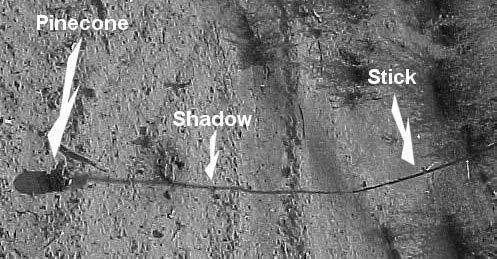

After 20 minutes or half an hour the shadow will have moved.
Place another rock, pinecone or other marker at the end of the new shadow location as shown below. You now have the basic instrument to give yourself a cool drink of water and a warm place to sleep tonight.


Draw a line between the two rocks. The line points east-west. The first rock you put down is always on the west end. Youve established precise rotational east/west once youve placed those two rocks or pinecones and drawn the line between the two.
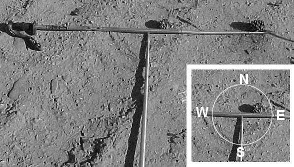

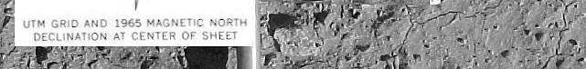
Cross-hatch the line between the rocks, and you have a north-south-east-west rose before you. This is particularly helpful when the sun is high and the shadows so short you cant really get a direction just by looking at them.
The end result
Without using a compass youve just established rotational East / West / North /
South within a degree or three of being exact. At this point you should be feeling a lot better. If you came in on a road from the south and walked away from it on the left side of the road you dont qualify as being lost anymore. Even if your situation is more complicated you wont be stumbling around in circles.
If you know the general direction you need to travel pick out a prominent landmark in that direction and use it for a goal so you dont have to do this frequently. Its also a good idea to look behind you and try to pick out another landmark there. That way when you wander off your course or cant see the first landmark youll still have a reference point you know you should be walking away from. Similarly, if you note large landmarks to the left or right and keep them there as you trek your route will be more direct than it would be otherwise.
When you sit down to rest go through the same process again just to reassure yourself.
MECHANICAL (VEHICLE) DIFFICULTIES:
Fan belts and hoses: Two of the peskiest problems in the backcountry. For some reason these two weak points in the mechanical system are responsible for the lions share of summer vehicle problems, along with stuck thermostats. Any one of the three can set you afoot by causing you to lose all your engine coolant.
An extra set of fan belts in the trunk, along with whatever tools are necessary to change one, is a smart idea. With the chicken noodle soup under the hoods of a lot of cars, this can be a problem, but its better than leaving a carload of equipment sitting out there while you go off to try to find your destiny in the desert.
Water hoses can be temporarily repaired by tightly wrapping the hose with electricians tape and refilling the radiator with the extra water you wisely brought along and wondered why. If the hose leak is too close to the clamp, an inch or two of hose can be usually be cut off, and the intact portion reattached under the clamp.
Tires: Make certain you have a good spare or two. Full sized. Street tires dont hold up well on 2-track roads. The wheelbarrow tire provided as a spare by the auto dealership probably isnt the best alternative for a 50 mile drive back to the pavement.
Jack: The thing provided in your trunk and represented as a jack is ok for changing a tire in the grader ditch of a paved road. For lifting your vehicle off a high center, a hydraulic jack is a minimum. A high lift handyman jack is better yet, if your bumper can take the strain.
4 Wheelers:
These vehicles are great for getting you one heluva long way off the beaten path.
Its easy to cruise along and not pay attention to exactly where you are. Its also easy to assume you will be back in camp by suppertime. Keep in mind that 4 wheelers can have mechanical failures. Any vehicle capable of dumping you afoot more than a days walk from a drink of water needs some thought beforehand.
Fuel:
Bear in mind its a long way between gas stations, and that low-speed, low-gear driving burns a lot of gas. Its a good idea to top off the tank every chance you get and go off the pavement in a car with a full belly.
If you are leaving people with the vehicle, make certain everyone understands the plan, and that the minimal needs of everyone are met. Everyone should know what is expected of them in the current circumstance, and in the event new developments arise sometime after you are out of sight of the vehicle. (Such as the arrival of a friendly rancher or someone noticing the wolf in the bushes is paying a lot of attention to Fido.)
If you leave your vehicle unattended, leave a note on it explaining what has happened, the direction you are headed, and what you intend. If theres a phone number would-be rescuers can call to notify someone of your situation, leave that, too. This will help a lot in the unlikely event you dont show up in a few days.
Communications
Cellular phones. If you are broken down, injured, or lost in the desert a cellular phone might save you if you are careful. If the phone shows No Service where you are, turn it off to save the batteries. Try using it again at night or from a hilltop where line-of-sight might assist you. Sometimes 50 feet of elevation will get you enough service to bring in the US Cavalry.
CB Radio. If youre broken down in the back country and your vehicle has a functional battery you probably only need a CB radio unit to get help. People who live a long way from anywhere often use the CB to gossip with their neighbors in the evenings. No matter how far you get from civilization, if you turn on the CB at night youll hear people talking about cow-prices, rain prospects and
Charlies pit-bull killing calves. The atmospheric density causes the signals to bounce at night. Evening conversations with people 50 miles away arent uncommon. If you are going into an area where a breakdown is possible Id suggest buying a garage-sale CB/antenna combination for $5 to carry in your trunk, just for emergencies. Pick a hilltop and use the radio to tell your location and problem. While youre waiting for rescue you can hear the funny stories about how Jims kid told the new teacher in town, I dont need to learn anything.
Im going to be a rancher.
Fire: If you think they are searching for you, keep a fire going all night. Even if they arent searching, it might attract attention, especially if you are in an area where fires are forbidden.
Smoke. Gather some cow or elk manure, or green wood and keep it near a small fire daytimes if you are stationary. The smoke or the smell of smoke might bring someone to investigate.
Mirror or shiny tin can lid. Almost anything to reflect sunlight. The methods for making or using a signal mirror are detailed below.
Laser Pointer. If you have one, sweep anything that looks promising. If you sweep that ranch house you can see 10 miles away it will get you some attention eventually.
Survival and Emergency Supplies:
Fire starter: A butane lighter, even if you dont smoke is a must. A film canister filled with cotton-balls soaked in candle wax will finish off your fire starting ensemble.
Water: Under some circumstances, theres no such thing as enough.
Clothing: A light jacket for cool desert nights, even if you dont plan to stay the night. A pair of extra socks.
Bedding: Blanket or bag, just for emergencies, can help you enjoy an unintended night under the stars.
Cutting tool: Never mind the big Buck skinner. A Victorinox Swiss Army knife with a cutting blade, a saw tooth blade, and can opener is a good choice.
Cyumel light sticks: 12 hours. A few in the trunk can serve as night road flares, but they can also give you something to wave around after dark when you are trying to get the attention of an SAR aircraft. If you are lost and carrying one dont light it to check whether the water has bugs in it. Wait until the second night you are lost to give the air search time to get rolling.
Mirror: If you place a makeup mirror in front of your eye so you are looking over the top of it, reflecting the dot of the sun on the ground in front of you, and extend your arm to full length in front of you, put your finger into the reflected light. Sight along the top of your finger, and move the arm, lighted finger, and reflection from the mirror all together toward the house on the ridge 10 miles away, the airplane above you, the fire tower you can barely see several miles away, and keep at it. It might eventually get you some help.
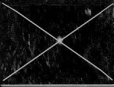
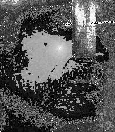
Some things are so small, easy, cheap and potentially valuable it makes no sense to be without them. A signal mirror is one of those. Theres an easy way to make a foolproof signal mirror out of two small mirrors back to back. Buy two 1-inch square mirrors from the discount store, and a little glue. Draw an X from corner to corner on the backs of each of the mirrors.
Scrape off the paint in a 1/4 inch circle at the center of each X, enough so you can see through. Apply some glue to the still-painted area on the mirrors, and stick them together neatly back-to-back.
Hold the mirror up to your eye an inch or so from your face and look at the reflection. Youll see the spot of light on your face where the sun is coming through the hole in the paint of the two mirrors. Tilt the mirror until the spot moves over the hole in the mirror. Now the mirror will be shining on whatever you are looking at through the hole. The target can be a car on the road, an airplane, a house, the eyes of your pet llama, or the circling buzzards. This can be a nice way to amuse yourself while youre taking a breather from imitating those cartoon characters crawling through the desert.
Reflection in the signal mirror and view through the hole
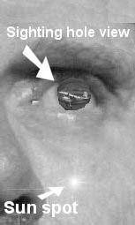
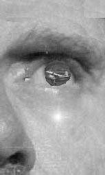


This series of photographs illustrates how you focus the reflection on the target.
You are looking at the reflection of your face in the mirror. Through the hole in the center you see an airplane. You also see the spot of sunlight that comes through the hole in the mirror. Keep the target in view through the hole and tilt the mirror. Youll see the spot moving upward toward the hole. When the reflection of the spot of sunlight reaches the hole youll see a new glare. The mirror is reflecting precisely on target.
Shelter: A couple of black plastic leaf-bags will serve in a pinch. They pack down small and are tough. The bags can be cut open to make a lean-to, or worn as clothing, one top side, and one bottom side. Something to keep off the dew and night winds can be a blessing. 30 feet of trotline cord will be a plus, if you decide to go for the lean-to. A marble sized rock folded into each corner and tied as shown below will give the cord something to anchor to without tearing the plastic. Leaf bags are surprisingly strong. This type lean-to shelter will hold up under brisk gusts if youve been careful securing the corners.
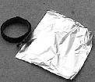

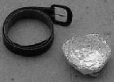
Vessel to heat liquid: A double fold of heavy tinfoil will do the job if you have nothing else.
Water will heat a lot more rapidly if your vessel is shallow with a large surface area on the bottom. Use your belt for a frame to shape the foil into a shallow pan and reinforce the sides by folding the extra foil back over itself. This will keep the sides from collapsing and spilling your liquid when the foil heats. If you arent in a hurry the best method for heating water this way is to place a flat-topped rock close to the flames and let it heat. After the rock is hot, place your foil pan on the surface and let the rock heat the water instead of using open flame. The pan will last longer using that method. Once the water is hot use your handkerchief or shirt tail for a pot holder to pick it up by both sides so you dont spill the hot liquid.
The vessel sides dont have the strength to support the weigh of the water if you try to lift it by one side.


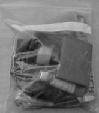
Pocket survival kit: the fire starter combo, the tinfoil, the lawn
bags, cord, and cutting instrument will all fit inside a one-quart freezer
bag for your jacket pocket. Theres room left for a small compass, lip
ice, 1 inch square mirror, and a bouillon cube or two if you want to
include them. Its small, light, and can spare you a nasty case of
exposure, or worse.
I also include a tube of Super Glue for emergency closure of cuts and gashes and a small vial of chlorine bleach for water purification.
Ranchers, rainbow people, desert rats, and outfitters
Although it wont be obvious to you, most land in the continental United States, both public and private, has someone watching it, trying to scratch out a living on it, and feeling ownership for it. When you turn off the pavement, you are an intruder into a socio-economic system you are probably unfamiliar with. Respect it.
The people you meet who live in remote areas dont see a lot of strangers. They tend to have strong opinions about most things, and dont get many opportunities to express them. Listen politely, nod, and smile a lot. These monologues arent an invitation for you to share your own opposing views.
You wont convert a remote desert dweller to your pet opinions, and he wont sway you to his. Your entire body of experience is unlike that of the person you are talking to. The observations about reality you base your opinions on are different. Keep your eye on the ball. Your investment in this person involves finding your way somewhere, or finding your way back. You arent looking for a new best friend. You dont care what he thinks about Japanese-made automobiles. Keep it tight.
Talking about religion, sex, and politics used to be a breach of manners. There were solid reasons for this. The potential for someone being offended was too great, and the returns, too small. In remote areas today, those prohibitions should probably extend to other issues such as environmentalism, abortion, welfare, wolves, and almost everything besides the heat, the dry, and whether that dirt road goes all the way out to the pavement.
If he talks ugly about the government and welfare programs, you wont win his heart by telling him you think grazing leases on public lands are just another kind of welfare. If he tells you the land you are on is his, and you know its actually public, he probably means he has the grazing lease.
You can use that as an opportunity to apologize and tell him you thought it was public, and drag out the map to show him where you thought you were. Turn on the GPS and plop it on one corner of the map to keep the wind from blowing it away. And let him show you where you actually are. If the map shows its public, youll both know without anything more needing to be said. Sometimes technology has advantages.
If a gate is closed when you get to it, close it behind you. Stay on the two-track and dont drive on grass. Grass you drive over in June is still bent over and brown in August. Respect No Trespassing signs.
If you find youve driven into someones yard and you want to stop and chat, honk the horn and wait a few minutes before you get out of the vehicle. Give the dogs a chance to come out of hiding and stand on their hind legs snarling at you through the window, if theyre going to. Give the resident a chance to slip on a pair of bib overalls and clamp a kitchen match between his teeth before he comes out to greet you.
If you have a portable microphone and an oblique sense of humor you can point the megaphone at the front of the house and announce, WE KNOW YOU ARE
IN THERE! NOW COME OUT WITH YOUR HANDS UP! But I dont
recommend that, or carrying your guitar to the front porch and trying to practice
Dueling Banjoes with the ranchers kid.
One of the unanticipated by-products of the War on Drugs is that people who used to depend on beef prices and drive 20 year old trucks are now driving new
$30K 4x4s with extended cabs and are a lot less tolerant of strangers. If you hear the drone of a $5000 4-wheeler in the distance it will probably be a rancher out tending his cows. There are also a lot of bush-vets scattered around, and a few unreconstructed hippies.
For you, this calls for some specific attitude adjustments translated into your behavior. If you see something unusual, something that shouldnt be where it is, something that indicates theres been a lot of activity or gardening going on a long way from anywhere, dont investigate or linger. If you try to do a little harvesting on your own, someone is likely to be offended. While you pat yourself on the back for your good luck, an emergency situation will probably develop.
Last, if you whiff the faint odor of acetone or iodine you are in the wrong place.
Go somewhere else. Whatever trouble you are in cant compete with the trouble you are in.
Similarly, there are a few hard-core prospectors out there working established mining claims. They usually have a lot of pride of ownership. If you come across one of these, the law allows you to walk across it, because its public, multi-use land. However, the person who filed the claim owns the mineral rights. You dont want to pick anything up or crank up your dry-washer to see how much color hes getting. Bad form. The boundaries of the claim are marked at the corners. Go outside those boundaries if you want to do any rock collecting.
If you get out much, someday youll encounter a guy with an in-your-face, glaring stand-offishness and an air of knowing every possible thing about everything.
Hell usually be in a cowboy uniform, but sometimes hell opt for BDUs. If he spits on the ground and glares when you greet him, theres a fair-to-middling chance hes an outfitter.
I dont know whether the profession just draws men of that sort, or if they sit down and ponder the desired image and deliberately cultivate it. An outfitter
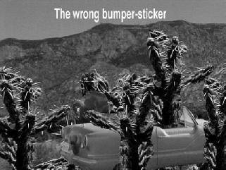
depends on affluent flatlanders spending a few grand to be led to a giant bull elk or some other prey, usually. I assume they believe to be successful they have to be the kind of character the flatlanders can go home and shake their heads about to their wealthy friends so theyre dying to spend a few grand to meet this guy, too, and tell their friends.
These fellows dont suffer fools joyfully, and they project the wisdom that every man, save one, is a fool. They save their purplest scorn for other outfitters, but you can figure on deep maroon for yourself at the very least. In any case,
Hollywood discovered the type a few years ago and enshrined it in a movie, but they added an authenticity and charm thats usually absent in the real item.
Im telling you this so you are forewarned. Dont bother asking the guy any questions or conversing with him unless you happen to be on the upswing end of your manic-depressive cycle and need a little something to get you back down a little. If you get any answers from him, they probably wont be true, and the cost will be that youve had to communicate with him. The circumstance will have you replaying the conversation in your mind a week or so later, thinking what you wish youd said.
Bumper-stickers:
Leave your politics at home. A banner on your car announcing that Whitey Will
Pay, or your opinion of cows, whales, ranchers, guns, abortion, or the president, invites hostile attention on an unattended vehicle. If you need help you wont improve the odds by rubbing the nose of your rescuer in your biases. You might find yourself at the mercy of a person who is violently opposed to your viewpoints a long way from the nearest lawyer or cop.
This could go on and on, and it begins to resemble a camp meeting sermon.
Crash Kits
Not many years ago all pilots carried crash kits with a few essentials inside to make life easier if they were weathered down or experienced engine failure. The concept was a good one. People who think in those terms tend to be mentally prepared for jolts of reality. But a crash kit just makes good sense for travelers.
The items stored inside can be handy even if you are broken down on the interstate and waiting for a wrecker. If your 4 wheeler breaks down on a mountain top it will be even handier.
Crash Kit contents inside a small day-pack:
1) Everything in the pocket survival kit shown above, including the cutting tool. (Dont bother with the cheapie multi-purpose knives you see today.
Buy one of the two brands of original Swiss Army knives large enough to include a saw tooth blade. If you have to use it youll be glad you did.)
2) A small garden trowel or other digging tool.
3) 1/4 roll of toilet paper.
4) A bar of motel soap.
5) A nylon windbreaker with hood. The kind that fits into its own pocket and zips shut is compact, light, and one of the items youll use most.
6) Toothbrush and small tube of toothpaste
7) One pair of thick socks
8) One pair of underwear.
9) 30 of duct tape wound tightly around a pencil.
10) One small aluminum cook kit for backpackers.
11) A fork and spoon.
12) One sealed package of beef jerky and a ½ pound package of raisins.
13) A vial of garlic oil (internal) or other insect repellent (external).
14) 100 of nylon cord.
15) 4 ea. 1 quart freezer bags.
16) 2 ea. large leaf bags.
17) 2 ea. plastic sandwich bags.
18) A cloth hat with a brim if you dont always wear one.
19) A pair of walking shoes if you dont always wear them.
20) A bandana or large handkerchief.
21) 2 ea. Light sticks, one red, one yellow.
22) One road flare.
23) A bottle of salt tablets, tweezers and 2 alcohol pad packets.
24) Any medications you take regularly.
25) One pair of the longest shoestrings you can find.
26) One small, cheap fleece summer sleeping bag.
27) Good sunglasses and a tiny eyeglass repair kit.
28) One thin, clear plastic 10x10 painting drop-cloth.
Youll soon discover you frequently have to replenish or return a number of these items to the crash kit.
Id suggest you also include a Delorme Atlas & Gazetteer for whatever state you are visiting. If you get stranded tear out a page or two for the area you are in and fold it into a sandwich bag to carry with you. Then youll have a good map of the back roads where you are and even some rough topographic features. You can use the rest of the atlas for fire starters if need be. Otherwise leave it behind when you start walking.
Conclusion
The most important facet of getting through any emergency situation is attitude and clear-headedness. Fear and anger are your worst enemies. Feel confidence in your own ability and consider whats happening just one of those inconveniences you have to get through in life. When youre home safe youll be proven right.
remember the words of Walter Yates, Its all in your mind! Theres no challenge you are likely to have to equal the one he found himself in and survived.
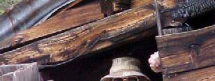


About the author:
As a youth in the 1950s Jack Purcell worked on farms and ranches in eastern
New Mexico. He spent many years searching for the Lost Adams Diggings and
researching the history. Purcells life-long passion for history and the outdoors
have produced several books now in print.
Hell Bent for Santa Fe
The Texan Santa Fe Expedition of 1841
The Lost Adams Diggings
Myth, Mystery and Madness
Poems of the New Old West
Cowboys, Casinos, Truckers and Trotskyite Dogs
Desert Emergency Survival Basics
Purcells books can be found at jackpurcellbooks.us